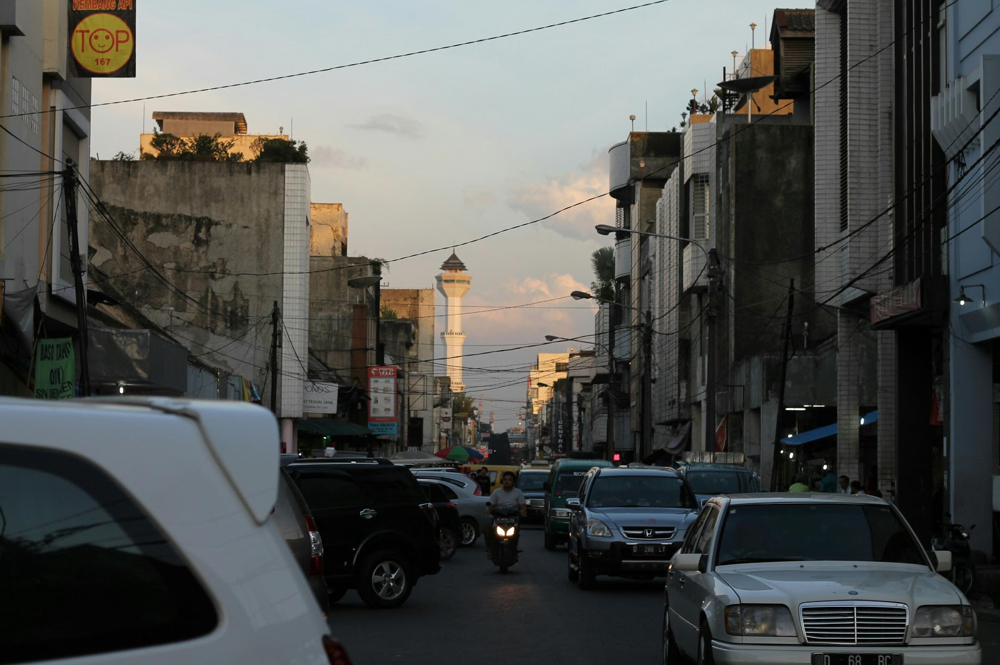
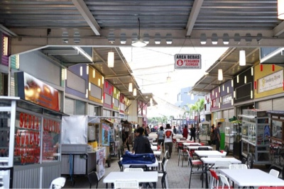
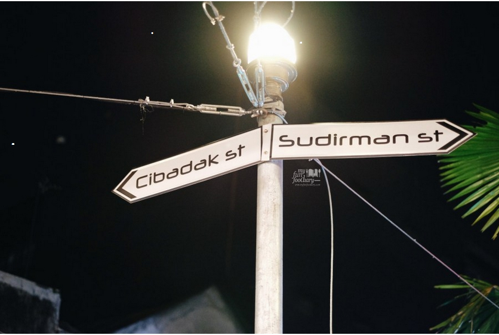
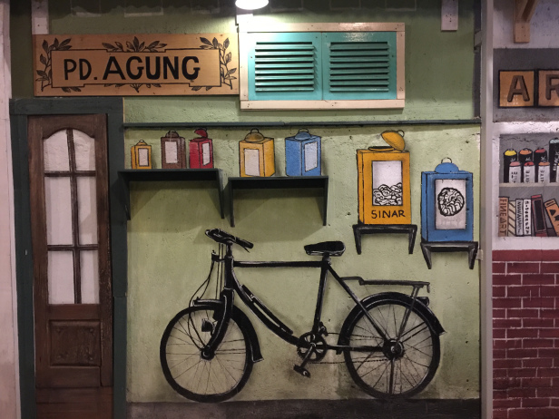

Bandung Cibadak Street Food

Who does not know how to cibadak? YUP street is famous as a center of night snacks in the city of Bandung. This place began
to crowded from 7pm at night so. Everything is in here! For you a culinary enthusiast do not say if you not
want to come here
Start from mixed rice, fried rice, martabak, siomay, batagor, baso tahu, swikee, cooked cooking, yam balls, wet cakes, mixed
ice, and more! You must be satified with the food in this street. With the cheap range price you can buy
all you want in this street.


So, if you are on the cibadak street, you can also stop by for a culinary tour to Sudirman Street. You can park your car
around Wedang Ronde Alkateri.
If you go to side of road Cibadak, you can find many beautiful mural and you can take picture with this mural. And also if
you look this mural, you can immediately remember the murals that are in Haji Lane, Singapore.
